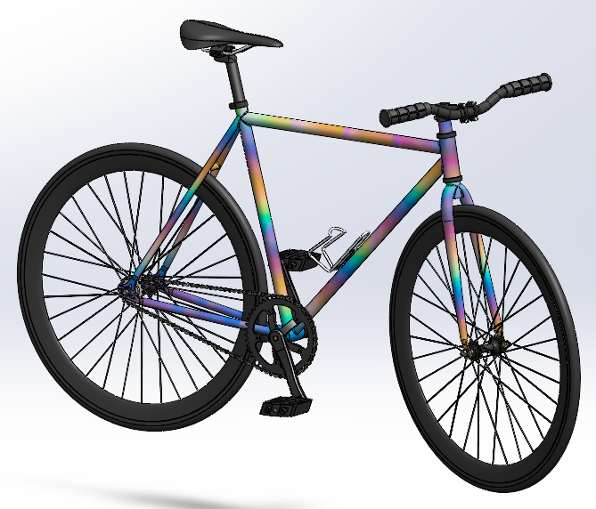
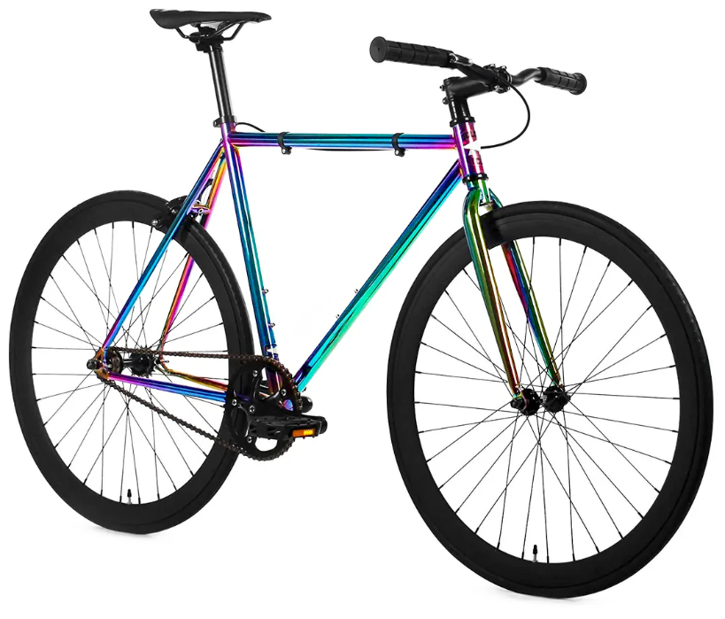
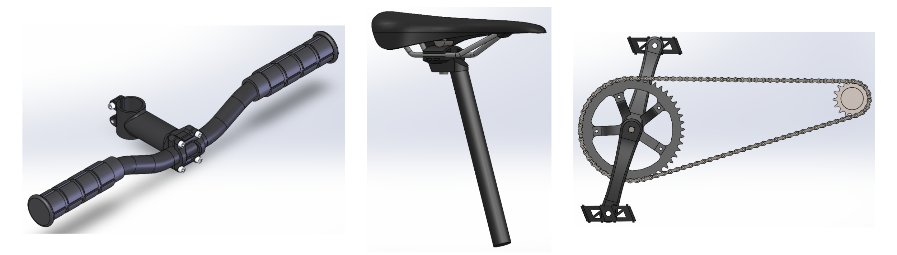
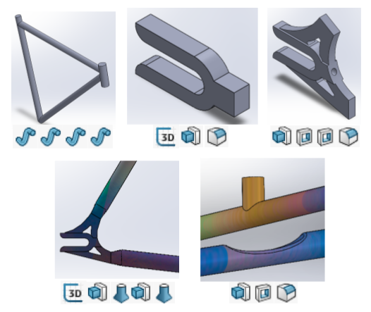
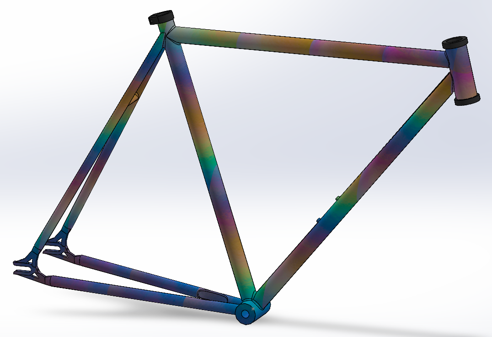
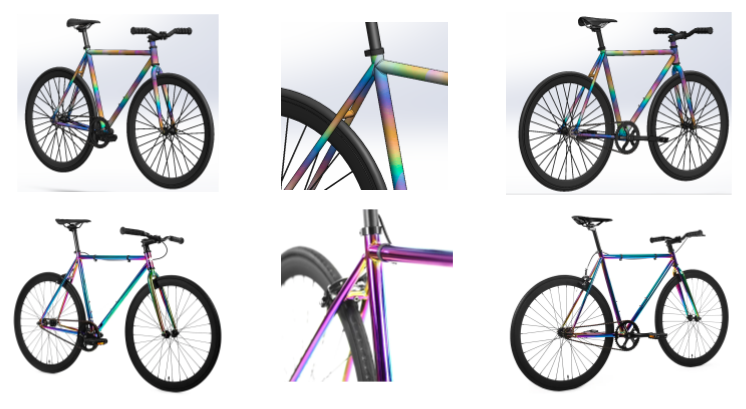
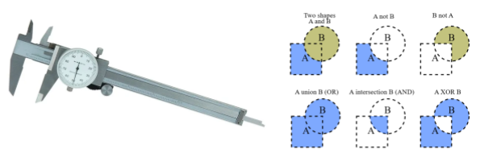

Overview
For this project, I wanted to model my fixie bike. I thought it would be cool to have a scale model, and the wheels and frame seemed like a good challenge.

The bike is a mostly steel frame with rubber tires and grips, a foam seat, and polycarbonate pedals.
It has four main subsystems:
• Drivetrain(wheels, gears, pedla, cranks, chain)
• Frontend(stem, handlebar, grips)
• Seat(seat post, saddle, saddle clamp)
• Frame(frame, fork, bottle cage)

Most Difficult Part
The frame has the most intricate features, such as the individual members, the dropouts, the wheel cutouts, and the weld seams. To model it, I first used some sweeps for the base frame. Then I used a couple extrudes for the dropout, and some cuts for the set screws. I then used a 3d sketch and lofts to connect the dropout to the rear triangle. Finally, the wheel relief was just a cut and some fillets.

I only modeled the left half, as it is symmetric about its side plane. After mirroring, the final result is quite pleasing.

Most Complicated Drawing
Far and away the most complicated drawing was that of the pedals. I had to use a section view with compound detail views to display the chamfers on the side of the walls. This was a good exercise in my engineering drawing abilities, however.

Expectation vs. Reality
The obvious thing that I did not model here is the brake system, but otherwise, I think it looks spot on. Something clearly off is also the texture, but it was quite hard to find a rainbow gradient and to get the shininess in SolidWorks.

Lessons Learned
• Invest in proper metal dial calipers.
• The boolean combination tools are your best friend.
• Don't get caught up in the minutiae.

Final Drawing